12 fotos generadas con tu LoRA personalizado en FAL.ai. Mira cuáles te gustan y dime cuáles uso en cada sección.
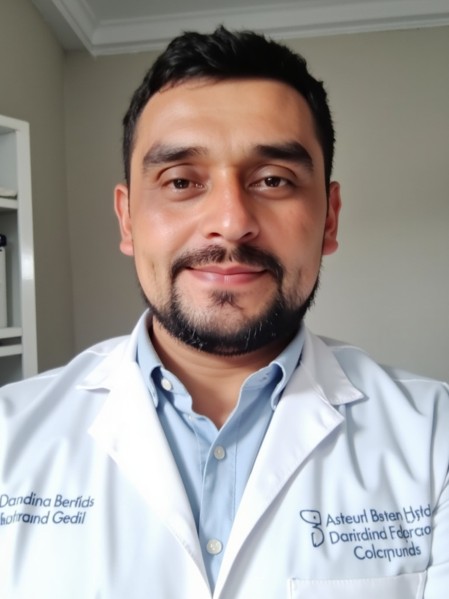
01 · Retrato formalAbout / Hero
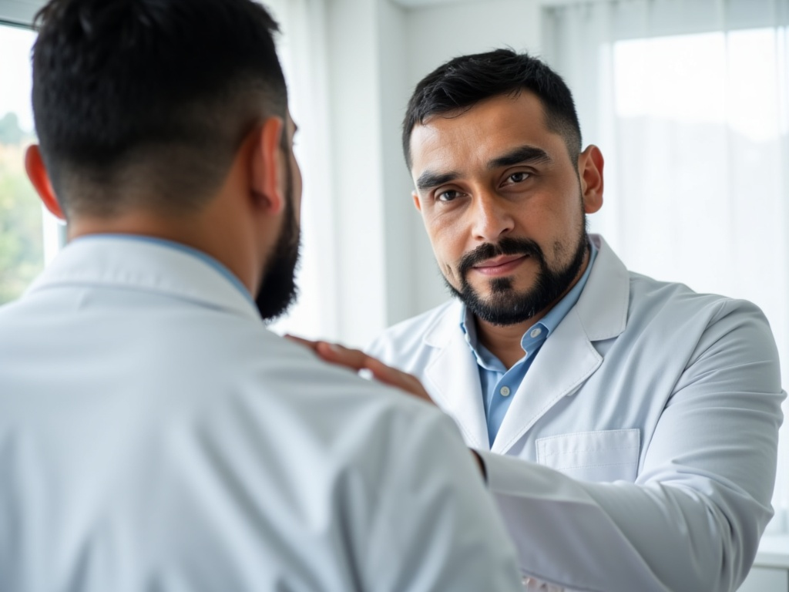
02 · Examinando pacienteServices · ajuste
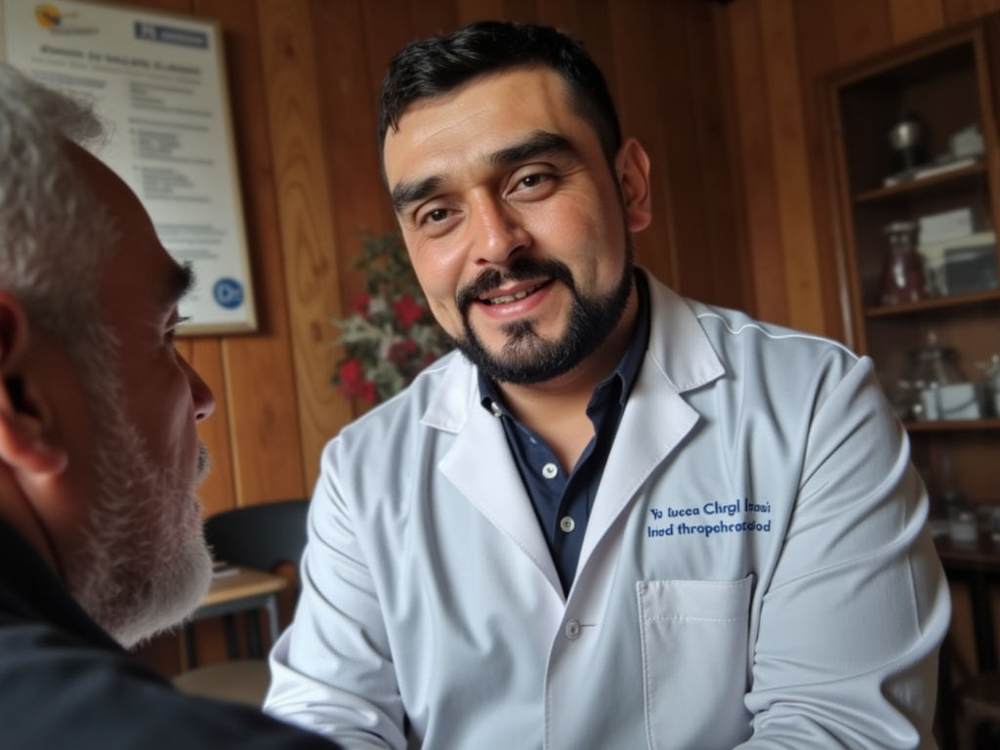
03 · Jornada ruralSection jornadas
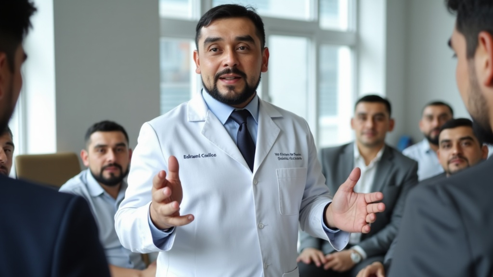
04 · Charla educativaBlog / Testimonials
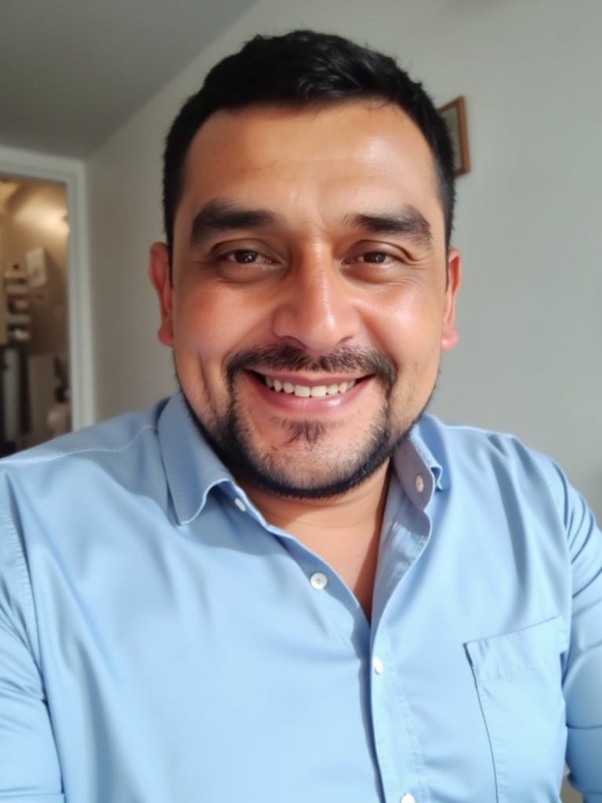
05 · Sonrisa casualWhatsApp / redes
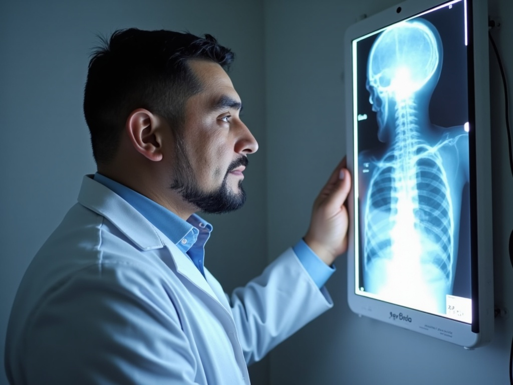
06 · Diagnóstico (X-ray)Services · evaluación
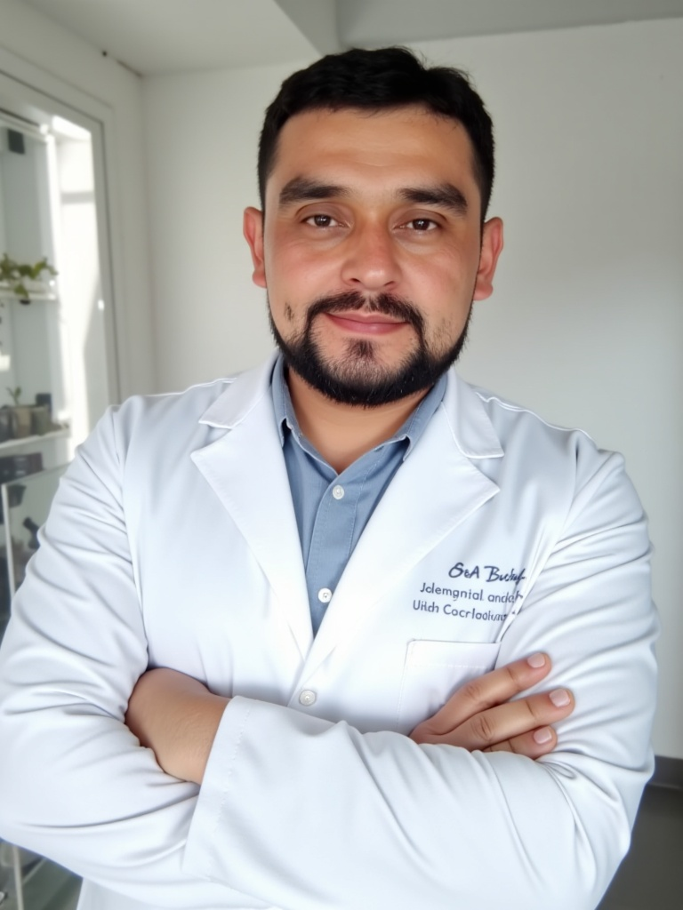
07 · Retrato heroHero principal
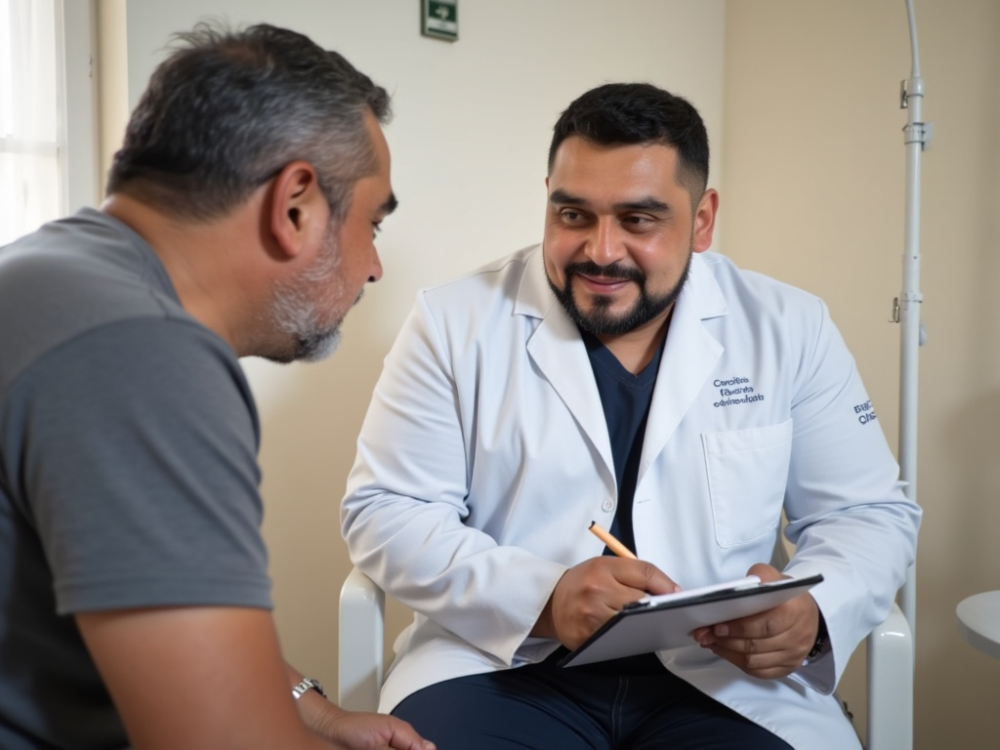
08 · ConsultandoServices · primera consulta
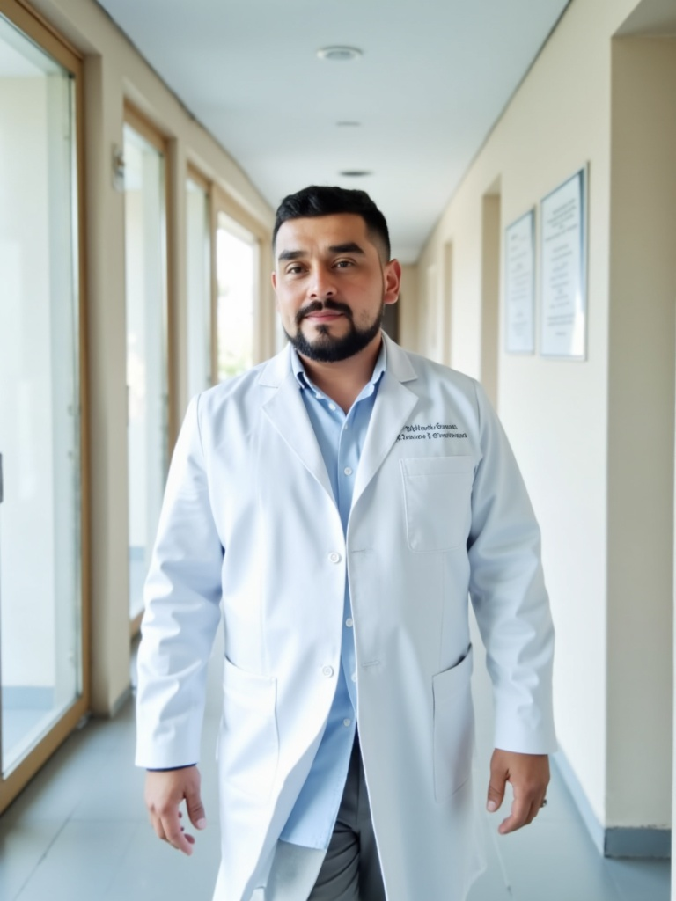
09 · Caminando consultorioAbout lifestyle
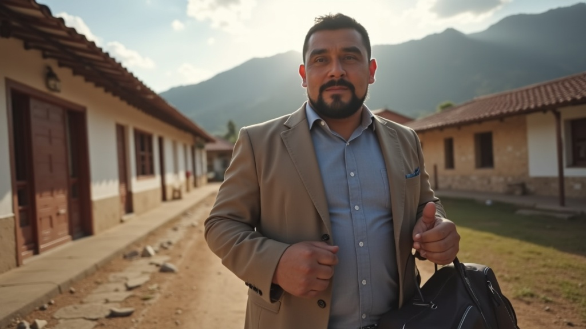
10 · Llegada a jornadaStorytelling jornadas
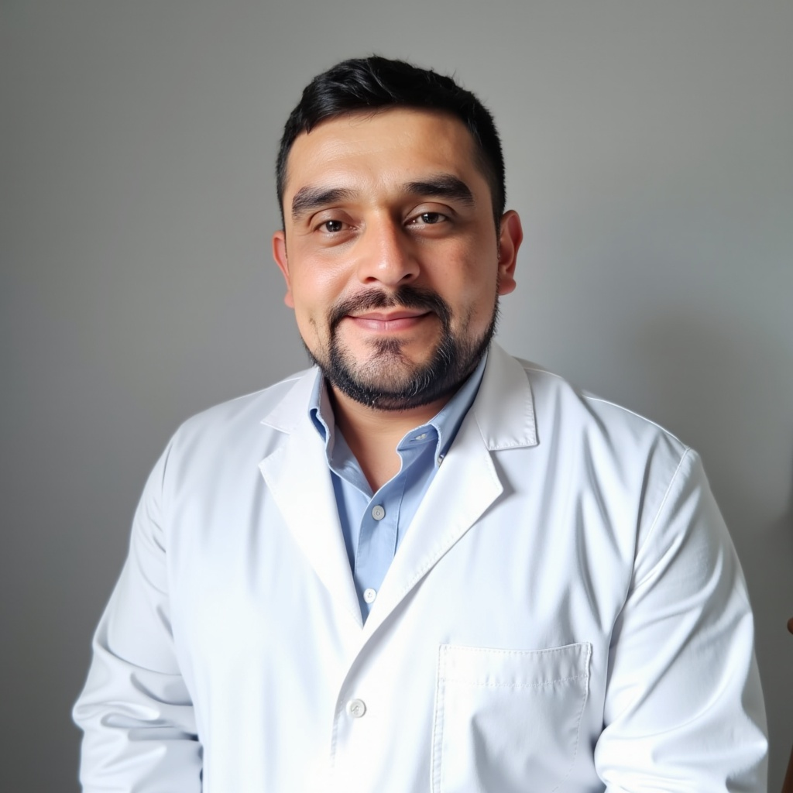
11 · Headshot studioTeam / footer
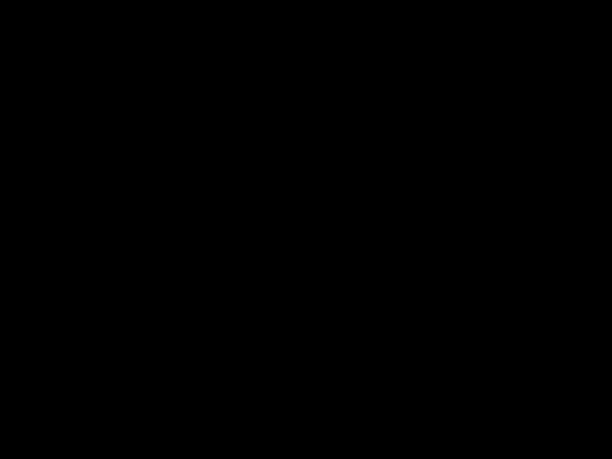
12 · PosturaServices · postural